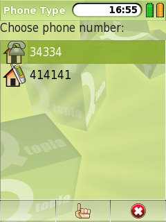
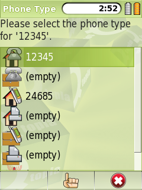

|
Home · All Namespaces · All Classes · Grouped Classes · Modules · Functions | |
The QPhoneTypeSelector class provides a way of selecting a single type of phone number. More...
#include <QPhoneTypeSelector>
Inherits QDialog.
The QPhoneTypeSelector class provides a way of selecting a single type of phone number.
The phone number types correspond to those defined in QContact::PhoneType.
It can be used in one of two ways - either to allow the selection of one of a QContact's existing phone numbers, or to allow the user to pick the type of a new phone number (for example, to save a phone number as a 'work mobile' number).
|  | Picking an existing number from a QContact |
|  | Choosing a phone number type for a new phone number. Note that the existing phone numbers for the QContact are displayed. |
See also QContact and Pim Library.
Constructs a QPhoneTypeSelector dialog with parent parent.
The dialog will show phone numbers and phone number types from the given contact.
The dialog can be used in two ways:
In the second case, the dialog will show any existing phone numbers for the contact in addition to the available phone number types.
See also updateContact().
Constructs a QPhoneTypeSelector dialog with parent parent.
The dialog will show phone numbers and phone number types from the given contact.
The dialog can be used in two ways:
In the second case, the dialog will show any existing phone numbers for the contact in addition to the available phone number types, restricted by the set allowedTypes. If allowedTypes has zero length, the entire set of possible types is allowed.
See also updateContact().
Destroys a QPhoneTypeSelector
Returns the QContact::PhoneType that is selected in the dialog. If no phone number type is selected, this will return OtherPhone.
This is an overloaded member function, provided for convenience.
This signal is emitted when the user selects a phone number type.
Returns the contact's phone number that corresponds to the phone number type selected in the dialog.
Updates contact to have the given number for the dialog's selected phone number type.
See also selected().
| Copyright © 2009 Trolltech | Trademarks | Qt Extended 4.4.3 |